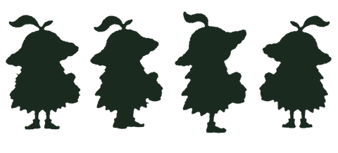
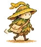
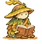
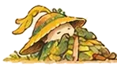
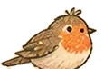
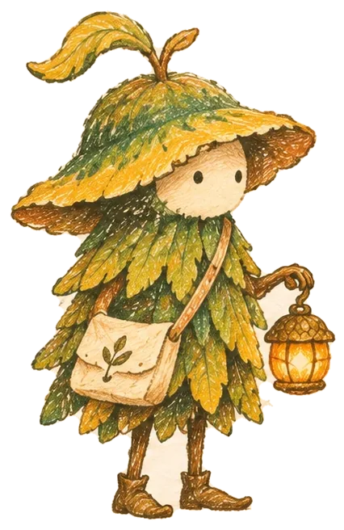

A KEEPER OF PAGES & PATHS
Meet the
Paperkeeper.
A little guardian of unfinished ideas. It carries folded notes, a leaf-worn cloak, and a lantern bright enough to find the next page.
Not a mascot for decoration: a quiet guide through the Lazarus storybook. Its shape should feel as if one illustrator drew it across every chapter.
STAGE 05 CHARACTER MODEL — ARTWORK STUDY, NOT FINAL CHAPTER

SILHOUETTE FIRST
A little
asymmetry
is a signature.
No oversized anime eyes. No uniform smile. No perfectly repeating leaves. The character stays recognizable even when the colors and details are stripped away.
- 01
The hat
A drooping single leaf, heavier to one side, crowned with a sprout. The uneven brim is the strongest recognition cue.
- 02
The face
Small pale face, two tiny ink-dot eyes, almost no drawn mouth. Expression comes from tilt and gesture.
- 03
The cloak
Three irregular tiers of mossy leaves with directional colored-pencil strokes, not a repeated geometric scallop.
- 04
The carried things
A cream paper satchel with a leaf mark, thin cross-body strap, and a warm amber acorn lantern.
- 05
The gait
Two slender twig legs, grounded steps, modest arm gestures. This V1 drawing has small boots, to be kept understated.
WITHOUT COLOR OR TEXTURE
Four angles, four readable shapes.

MOVEMENT MUST FEEL DRAWN
A few gestures.
Not a spectacle.
Walking in three uneven steps, pausing to read, then resting. These are small reference drawings for a later limited-animation system, not a working motion sequence.





Small pose keys are reference thumbnails at their authored size; animation in 8–12 fps belongs to Stage 11, not this page.
SMALL ROLES, CLEAR PURPOSE
The forest has
its witnesses.
The moth quietly marks a direction; the roundbird offers a brief response. Neither should compete with the Paperkeeper or become a new mascot.


Exploratory drawings contained other animals. They are explicitly excluded from the canonical character cast.
Read the shape
before the details.

At 48px the image is decorative, not a navigational control or carrier of critical information. Native HTML labels always remain available.